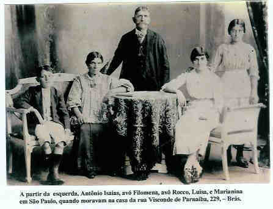
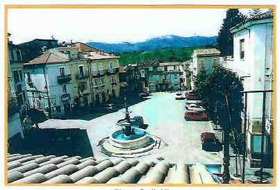

Rocco Petrella
- Nascido em: 28 Ago 1861, Pratola Peligna , L'Aquila, Abruzzo
- Casamento: Filomena Di Bacco em 18 Dez 1882 em Pratola Peligna , L'Aquila, Abruzzo
- Falecido: 1920, Rio Grande Da Serra, Sp com 59 anos de idade

 Notas Gerais: Notas Gerais:
Um pouquinho de história
Terra natal dos nossos ancestrais
Nossos antepassados eram originários da Itália, mais precisamente,
da região de Abruzzo, província de L'Aquila, Comune de Pratola Peligna.
A Itália é formada por 20 Regiões que são divididas em 103 Províncias e estas separadas em Municípios (Comuni) 9.
As Regiões da Itália:
(ver foto As regiões da Itália)
Um pouco sobre a Comune de Pratola Peligna
Transcrevemos a seguir o texto do historiador italiano professor Panfilo Petrella, nascido em Pratola Peligna, e falecido 22-01-2005 no Canadá.
"É uma acolhedora cidade, situada na região de Abruzzo (região mais montanhosa da Itália), no coração do Vale Peligna (Conca Peligna).
Com altitude de 342 m acima do nível do mar possui um bom clima não ressentindo excessivamente os rigores invernais, graças a proteção dos montes circundantes, que fazem uma coroa protetora.
As coisas notáveis de Pratola são:
> O Santuário da Madonna della Libera.
> O borgo ( aldeia , povoado) di Dentro La Terra, o primitivo aglomerado urbano com o
Castelo De Petris. que atualmente abriga as "Suore Pie della Presentazione di Maria SS. al
Tempio".
> As duas igrejas da Maddonna delle Grazie e della Pietá.
> De notável valor artístico e histórico as duas fontes monumentais da Piazza Garibaldi e da
Piazza della madonna della Libera.
> Igreja matriz de São Pedro Celestino.
> Notável o Museu da Civiltá Contadina, construído no local del Molino dei Celestini.
Com uma amena e fértil posição, ainda hoje, a prática de uma agricultura favorável, de um modo particular o cultivo de videiras e de hortaliças, é a fonte de renda principal para a população local. Os vinhos Montepulciano, Cerasuolo e Trebbian, as uvas, o feijão e o alho roxo, são os apreciados produtos da economia da região.
Atualmente, estão em desenvolvimento atividades artísticas e industriais na região."
Acesso à cidade:
De carro: Auto estrada A25 (Roma -Pescara), aproximadamente 120 km até a
saída na estrada SS17 (Cocculo - Pratola Peligna) aproximadamente 12 km.
De trem: Linha ferroviária (Roma - Pescara), até Sulmona, e aí (Sulmona -L'Aquila).
De avião: Até o aeroporto de Pescara, que dista 50 Km de Pratola Peligna.
População: 8.083 habitantes.
CEP da área: 67 035
DDD da Área: 0864
Fotografias do "Photo Studio Gabriel de Pamphillis"
ver foto "Caminhando por Pratola"
ver foto " Vista Geral"
ver foto "Andando pela cidade"
ver foto "Piazza Garibaldi"
ver foto "Sob a neve"
ver foto "Piazza Garibaldi"
ver foto "Via Schiavonia"
ver foto "Piazzetta Schiavonia"
ver fotos "Vico del Sacco"
ver foto "Via Corderia"
ver foto "Vico Particolare"
ver foto "Vida Campesina"
ver foto "Pastoreio"
ver foto "Videiras"
ver foto "Colhendo uvas"
ver foto "Produzindo vinho"
ver foto "Frisos e molduras"
ver foto "Maio, mês festivo para a Madonna della Libera. Cidade iluminada"
ver foto "Solene procissão da Madonna della Libera"
------------------------------------------------------------------------------------------------------
Sobre a pesquisa e o trabalho original de Genealogia feito pelo Miguel e pela Neuza\tab\tab\tab
O que para muitos é um contra-senso, mas convivendo com a família exatos 51 anos, tive condições de elaborar a genealogia dos descendentes do avô Rocco Petrella.
Porém esta não é a realidade. Eu, neste trabalho, fui apenas um mero organizador, arquivista, pesquisador e coadjuvante.
A Neuza e eu percebemos, numa reunião familiar, mais ou menos no ano de 1975, que nossos pais, Michele Damiani e Marianina Petrella Colucci (filha de Rocco Petrella), possuíam uma memória prodigiosa e substancial conhecimento dos fatos e acontecimentos familiares do passado.
Surgiu a idéia de aproveitarmos essas informações para conhecermos nossos antecessores e os parentes com os quais convivemos.
Começamos a pesquisar as famílias Damiani e Petrucci (linhagem do Miguel) e famílias Colucci e Petrella (linhagem da Neuza).
Partimos da premissa de que, nas informações e "folclores" familiares, nem tudo é verídico e nem inverídico. Essas "histórias", fornecidas pelos parentes, eram fartas sobre o modo de vida no passado.
\tab
Coletamos dados, inicialmente do nosso pequeno núcleo doméstico e, depois, de parentes, amigos e aqueles que tinham o mesmo sobrenome.
Lemos muitas cartas descoradas pelo tempo, examinamos documentos, olhamos com emoção e saudades velhas fotografias, procurando anotações no verso ou eventual nome, data e cidade do fotógrafo.
\tab
Na época, as informações aumentaram a tal ponto que resolvemos, então, escrever sobre a progênie da família, não apenas com o intuito de satisfazer nossa curiosidade, mas, pensando em deixarmos um esboço histórico-genealógico, aos nossos descendentes interessados em se aprofundar nos estudos das nossas origens.
\tab
Devemos mencionar que, para elaborar um relato estritamente pessoal, não nos prendemos aos esquemas rígidos. Assumimos, com amadorismo, roteiros circunstanciais, pesquisando sem pressa e curtindo as descobertas, com o mesmo prazer de um desbravador ao encontrar a trilha perdida.
Do passado, fizemos levantamentos no Brasil e na Itália.
No Brasil, consultamos:
1) Registros de Óbitos, o Departamento de Genealogia da Igreja de Jesus
Cristo dos Santos dos Últimos Dias (Igreja Mórmon) 4, o Instituto
Genealógico Brasileiro e o Museu Municipal de São Carlos.
2) Não havendo ainda a Internet, com o auxílio das listas telefônicas de
assinantes de várias cidades brasileiras, enviamos correspondências a
indivíduos com o mesmo sobrenome tentando obter mais elementos para a
pesquisa.
\tab
Na Itália, pesquisamos:
1) Em duas Prefeituras: comune de Mondragone e comune de Baiano, e um
registro Paroquial da comune de Campagnano di Roma, que tinha arquivos
provinciais gerais. Nos três, obtivemos os documentos procurados.
2) No ano de 1997 em Mondragone, cidade dos "nonnos" paternos do Miguel,
conversamos com pessoas idosas que ainda moravam perto da casa onde eles
viveram.
Ficamos surpresos e, ao mesmo tempo, enaltecidos, pois quatro dessas
pessoas lembravam-se da nossa família, ou seja, dos nossos tios e avós.
Uma delas, o sr. Antonio Del Schiavo, residindo no "vicolo del
Casalielo", disse-nos que na infância, foi amigo dos nossos familiares.
Numa outra viagem no ano de 2000, fomos visitar a "casa paterna". Os
moradores atuais, (família Bertolino Amato) além de contarem coisas e fatos
que sabiam dos nossos parentes, tornaram-se amigos especiais.
O mesmo aconteceu na Comune de Baiano, ( provícia de Avelino) cidade dos
"nonnos" paternos da Neuza. Localizamos os parentes da primeira filha do
nonno Stefano Colucci, e além disso fizemos amizade que perdura até hoje,
com a família de Michele Napolitano.
C. as. Nossos antepassados saíram da Itália com destino ao Brasil:
Damiani em 1927,
Colucci em 1890, e mesmo assim, foram recordados.
3) Por último, trocamos correspondências com o Centro di Ricerca Storico
Araldica e Genealogico, em Firenze, e com o Istituto Genealogico, em
Roma.
Já, em 1998 havíamos editado as genealogias e histórias das Famílias Damiani,
Petrucci e Colucci.
Relatamos todos estes fatos para demonstrar que além de pesquisar, procurar informações in loco, trocar correspondências com orgãos oficiais, parentes e pessoas com os mesmos sobrenomes nós não caminhamos no escuro.
Conseguimos muitos conhecimentos e informações sobre a família Petrella, mas não podíamos editar a sua genealogia porque não conseguíamos obter dados de algumas famílias contemporâneas, e isso se prolongou até o final de 2004.
As contradições:
1- graças a nossa querida Marianina possuíamos a progênie de ascendência do seu \tab pai,
avô e bisavô.
2- possuíamos também duas certidões de nascimento, obtidas através de
microfilmes do Departamento de Genealogia da Igreja de Jesus Cristo dos Santos
dos Últimos Dias (Igreja Mórmon): "Maria Luigia Di Simone" -mãe do avô
Rocco, (anexo 1) e "Panfilo Antonio di Bacco" - pai da avó Filomena, (anexo 2),
ambos da Comune di Pratola.
3-Através da Internet, conseguimos várias ramificações familiares até o ano de 1726,
e o melhor: elas ratificaram as informações já obtidas. Sabemos que para fazer
uma pesquisa na mídia digital, a primeira regra é manter um saudável ceticismo. Se
a sua informação da Internet parece ser a resposta para a sua prece, duvide.
Tais fontes são só orientações. Deve-se confirmar cada detalhe. Por isso a nossa
alegria, no decorrer do trabalho, de percebermos que os nomes e datas obtidos
encaixavam-se perfeitamente nas informações familiares.
Resolvemos então pedir auxílio novamente para vários parentes, e finalmente
conseguimos as poucas informações que estavam faltando.
Obtivemos apenas nomes completos e datas mas nos consolamos, porque é melhor pouco do que nada.
A nossa idéia era fazer igual aos outros trabalhos, ou seja, a História da Família.
\tab
Procuramos coletar o maior número possível de elementos, mas, se algum fato ou data importante deixaram de ser mencionados, foi por absoluta falta de conhecimento de nossa parte e por não colaboração de quem sabia.
Quando possível, ilustramos com fotos cada ramo familiar, com a finalidade de:
> relembrarmos os entes queridos;
> apresentarmos um registro da imagem dos nossos semblantes aos familiares do
presente e do futuro (atualmente, vários parentes não se conhecem);
> comparação das semelhanças físionômicas;
> evidenciar diferentes modas e costumes.
\tab
Analisando-se o estudo Genealógico de uma estirpe, sob o prisma da hereditariedade, ficaremos apaixonados pelo que ele revela. Após várias gerações, as características genéticas entre os membros de cada família reaparecem. É um olhar, uma feição, um perfil, uma personalidade.
Além disso, os fatos da vida cotidiana servem para caracterizar a pessoa e o seu contexto social.
Afinal, a Genealogia de uma família não se restringe à elaboração de sua Árvore, pois o ser humano é mais do que um simples nome numa lista de parentesco.
Cada pessoa tem uma história que reflete o seu tempo e os lugares onde viveu.
Neste sentido, como biografar nossos antecessores sem retratar a pequenina cidade de Pratola Peligna?
Como resumir a vivência deles e a nossa em São Paulo, sem narrar as condições de vida no passado?
Pedimos que considerem o que foi feito e não o que deixou de ser feito. Lembrem-se que, neste tipo de pesquisa, o pesquisador transcreve apenas o que lhe é dado ler e constatar.
Gostaríamos que a partir dele mais pessoas se interessassem e fizessem a complementação da História da Família Petrella.
Ao questionarmos os parentes sobre a progênie, recebemos apoio e compreensão da maioria, mas alguns não nos entenderam.
O presente trabalho não é perfeito como não o é nenhuma Genealogia familiar, mas é honesto e consciencioso. No entanto, humildemente, receberemos as críticas, aguardando, neste meio tempo, que os censores nos forneçam subsídios para as devidas complementações ou correções.
Aos que colaboraram, os nossos agradecimentos
------------------------------------------------------------------------------------------------------
Método da pesquisa genealógica
Antecedendo às perguntas que provavelmente seriam feitas, inclusive sobre a confiabilidade das informações que apresentamos, vamos explicar o nosso método de trabalho e o raciocínio para a trajetória da ascendência até Nunzio Petrella (* 1772).
Do sobrenome Petrella, durante vários anos, pesquisamos:
1° com os familiares mais antigos, inclusive com Marianina que dizia que:
seus pais eram o
Rocco Petrella casado com a Filomena di Bacco,
e seus avós eram
Gaetano Petrella casado com Luigia di Simone e
Panfilo Antonio di Bacco casado com Maria Giuseppa Candida Spadafora.
Para ratificar tal declaração existe a sua Certidão de Nascimento onde estes dados estão
descritos.
\tab
Consta nas Certidões de Nascimento dos primos Nelson Petrella, Haydee Petrella,
Oswaldina Vian, Roque Petrella (que conviveram com a avó Filomena) e também na da
Neuza Colucci, que seus avós eram Rocco Petrella e Filomena di Bacco (que
depois de casada, passou a usar Filomena Petrella).
\tab
2° diretamente nos microfilmes da Igreja Mórmon (Centro de História da Família) 4.
C.as. Para quem não sabe, a Igreja possui uma das maiores bibliotecas genealógicas do mundo. Sob a direção do Departamento de História da Família, a Igreja e seus membros tem reunido milhões de volumes, contendo registros de nascimento, casamento, morte e outros.
Hoje, centenas de milhões de registros microfilmados estão disponíveis para pesquisa. A biblioteca é aberta ao público e está situada nos arredores da histórica Praça do Templo, no centro da Cidade do Lago Salgado em Utah (USA).
Cópias dos registros estão protegidas num depósito subterrâneo escavado sob uma sólida montanha de granito, num desfiladeiro, perto da Cidade do Lago Salgado. A caverna protege permanentemente estes valiosos registros de qualquer catástrofe natural e preserva-os em condições apropriadas de armazenagem.
Há também centenas de centros de história da família espalhados pelo mundo. No Brasil, existem atualmente 48 destes centros.
Neste Departamento, além de ver os microfilmes dos documentos originais, dependendo
do acúmulo do serviço, pode-se obter xerocópias dos mesmos.
Se houver alguém interessado em continuar as pesquisas, abaixo passamos a relação dos microfilmes que examinamos.
FICHA 6 Pratola Peligna período 1809-1865 (nascimento - notificação - morte)
nome\tab período da busca\tab n° microfilme\tab
Gaetano Petrella (nascimento)\tab 1817 -1818\tab 1386796
Rocco Petrella (nascimento) \tab 1861\tab 1353600
Filomena di Bacco (nascimento)\tab 1862\tab 1353601
Pampilo Antonio di Bacco (nascimento\tab 1821\tab 1386797
Nascim. Notif. Mort . Casam.\tab 1809\tab 1386706
Nascim. Notif. Mort . Casam.\tab 1809\tab 1386707
Nascim. Notif. Mort . Casam.\tab 1810\tab 1386708
Nascimentos\tab 1861\tab 1424362
Maria Luigia di Simone (nascimento)\tab 1821\tab 1386797\tab
3° No sites:
Lettopalena /Abruzzo Genealogy
Lettopalena /Pratola Peligna Genealogy
My Italian Family / Italian Genealogy
Genealogy Data Page
Surname Navigator Italy
4° Atendendo ao pedido que o Nelson Petrella fez numa das viagens à terra Paterna, e a carta enviada pela Ana Petrella (Aninha), a "prima" Marfisa que mora em Pratola Peligna, pesquisou diretamente nos arquivos da Comune.
Lá a ascendência que consta é:
" Dalle ricerche fatte negli archivi Comunali si é riscontrato quanto segue:
A) fratelli e sorella:
1)\tab Petrella\tab Nunzio\tab nato\tab il\tab 06- 07-1884\tab
2)\tab Petrella\tab Gaetano\tab "\tab "\tab 06- 11-1887\tab
3)\tab Petrella\tab Ercole\tab "\tab "\tab 19-10-1890\tab
4)\tab Petrella\tab Erminia\tab "\tab "\tab 19-03-1893\tab
B) padre e madre dei predetti:
1) Petrella Rocco nato il 28-8-1861
2) Di Bacco Filomena nata il 13-5-1862
C) nonni di Nunzio:
1) Petrella Gaetano nato il 25-8-1818
2) Di Simone Luigia di anni 40
D) bisnonni di Nunzio:
1) Petrella Nunzio di anni 46
2) Vallera Maddalena di anni 40
Per i bisnonni non esistono gli atti di nascita. Se si vogliono avere altri dati di parenti materni me lo farete sapere.........."
N. as. Notar que na pesquisa cita Nunzio di anni 46 e Maddalena di anni 40.
Era costume na Certidão, o oficial do registro Civil colocar a idade do pai (declarante) e da mãe. Se considerarmos o nascimento do Gaetano Petrella em 1818, Nunzio (o pai declarante que tinha 46 anos) nasceu em 1818 - 46 = 1772, e a mãe Maddalena Vallera nasceu em:
1818 - 40 = 1778.
Ela escreve também que para os bisnonos (Nunzio e Maddalena) não existem na Comune as certidões de nascimento, sendo apenas citados como pais, no registro do filho Gaetano.
Com estas comprovações, (e sem nenhuma dúvida) chegamos até
Nunzio Petrella (*1772) casado com Maddalena Vallera (*1778).
As outras ramificações provenientes das partes maternas foram conseguidas com microfilmes (Mórmon) e Internet e encaixaram-se perfeitamente na linhagem.
Notas de Pesquisa:
Rocco e Filomena, em Pratola Peligna, L'Aquila, Abruzzo, tiveram os seguintes filhos:
Nunzio Petrella (* 02-07-1884 e registrado em 06-07-1884).
Gaetano Petrella (*06-11-1887 falecido com dois anos de idade em PP).
Ercole Petrella (*15-11-1889 e registrado em 19-10-1890).
Erminia Petrella (* 19-03-1893).
Em 01-01-1898 Rocco, Filomena e os três filhos embarcaram no porto de Gênova no navio Washington e imigraram para o Brasil, aqui desembarcando em 19-01-1898 no porto de Santos. Foram para a Hospedaria dos Emigrantes em São Paulo, e lá tiveram como destino: Aurora fazenda de Pedro Doria.
N. As. A xerox da Certidão de Desembarque fornecida pelo Memorial do Imigrante foi cedida gentilmente pelo primo Núncio Petrella (Neno), e encontra-se anexa no final do trabalho (anexo 4).
Eles vieram para o Brasil como muitos outros imigrantes, trabalhar na lavoura do café. Rocco com 38 anos, Filomena com 37, Nunzio com 13, Ercole com 7 e Erminia com 4 anos.
N.as. Entre 1871 e 1930, mais de 1.565.835 imigrantes italianos, vieram para o Brasil 1,13,14.
Os principais fatores que contribuíram para que um número bastante grande de italianos emigrassem foram: o crescimento populacional e o processo de unificação italiana 12,14.
Transcrevemos a seguir trechos do trabalho de Ricardo, T..
"As condições de vida da população italiana (naqueles tempos essencialmente rural), eram consideradas péssimas. A existência de "latifundiários" (poucas pessoas que detinham grande parte das terras cultiváveis), a introdução de modernas máquinas no campo e de novos métodos de produção nas cidades reduziram o número de empregos. Após a unificação do país (1870), impostos eram pagos sobre praticamente tudo o que se produzia.
Os pequenos proprietários de terra pagavam até mesmo impostos sobre produtos para consumo próprio e animais domésticos. A quantidade de tributos sobre as propriedades rurais aumentou muito, o que fez com que muitos produtores (a extensa maioria) acabassem por se endividar, a ponto de terem que se desfazer de suas propriedades para saldar as dívidas contraídas com o governo. Os impostos elevados favoreciam sempre os grandes produtores, que podiam oferecer ao mercado consumidor, produtos de menor preço, quando comparados com aqueles produzidos nas pequenas propriedades. Assim sendo, boa parte dos pequenos proprietários de terra acabou por seguir para as cidades, em busca de novas oportunidades, encontrando todavia, a fome, a miséria, o desemprego e a marginalidade.
Deixar portanto o seu país, com destino à terras onde as oportunidades poderiam ser melhores, foi a única saída encontrada por esse povo, para garantir sua sobrevivência.
Por outro lado, no Brasil, os movimentos abolicionistas e o desenvolvimento de políticas governamentais para atrair imigrantes criavam um ambiente favorável para a vinda desse povo. A proibição do tráfico negreiro (1850), a Lei do Ventre Livre (1871), a Lei dos Sexagenários (1885) e o crescimento da campanha pela abolição da escravatura (que veio a acontecer em 13 de Maio de 1888) foram os principais fatores para a busca de soluções alternativas de obtenção de mão-de-obra, em substituição ao trabalho dos escravos. No ano de 1840, o café começou a substituir a cana-de-açúcar como principal meio econômico.
Com o desenvolvimento dessa atividade econômica (principalmente no estado de SP), a necessidade de mão-de-obra aumentou, já que os escravos eram os responsáveis pelo trabalho nas fazendas de café, e com a abolição da escravatura, essa mão-de-obra não se encontrava mais disponível aos produtores. O governo brasileiro adotou diversas medidas para que mão-de-obra estrangeira, principalmente européia, viesse para o país, suprir assim a necessidade que se havia criado.
Os estados da Federação passaram inclusive a ter o direito de trazer imigrantes, com políticas imigratórias independentes, quando antes esse poder era exclusividade do Governo Imperial.
No caso do estado de São Paulo, houve o estabelecimento de sua própria política imigratória. Fazendeiros paulistas acabaram se unindo e fundando, em 1886, a chamada Sociedade Promotora de Imigração, órgão responsável pela definição desta política imigratória, juntamente ao governo da província de São Paulo.
O governo provincial assumiu todos os custos relativos à vinda dos imigrantes, principalmente através do financiamento das passagens. As companhias de navegação desenvolveram-se de modo a atender o aumento de demanda que estava por vir. Essa política de financiamento do governo, aliada à intensa propaganda (com promessas de moradia, alimentação, salários, condições de vida dignas e ainda, a possibilidade de comprar terras e se tornar produtor) influenciaram a emigração voluntária dos europeus, principalmente dos italianos, que se encontravam tão descontentes com as condições de vida e trabalho em seu país.
Um dos documentos obrigatórios para a viagem e que era trazido por cada um dos imigrantes era seu passaporte. Quando chegavam à Hospedaria, utilizavam o passaporte ou então a lista de bordo do vapor para fazer seu registro de entrada, onde constavam: nomes dos imigrantes, estado civil, parentesco ou acompanhante, nacionalidade, profissão, procedência, nome do vapor, data de entrada, destino, etc.. Porém alguns imigrantes vinham para o país de forma espontânea, sem contrato de trabalho com fazendeiros de café, o que fazia com que os mesmos não necessitassem passar pela Hospedaria e portanto, não é possível encontrar registros desses imigrantes nos livros da Hospedaria.
Na Hospedaria de Imigrantes, além dos registros de entrada, os imigrantes celebravam os seus respectivos acordos com os seus futuros patrões: os fazendeiros produtores de café. De lá, seguiam geralmente de trem, com suas passagens financiadas mais uma vez pelo governo da província, até a fazenda de destino, onde viveriam daquele momento em diante.
Em 1908, aproximadamente 70% dos trabalhadores das fazendas de café eram de origem italiana. Os outros 30% consistiam principalmente em portugueses, espanhóis e libaneses.
Nas fazendas, os imigrantes (de agora em diante chamados de colonos) recebiam pagamento pelo número de pés de cafés cultivados, pelo volume de café colhido somados e até mesmo um salário fixo por dia de trabalho. A família toda trabalhava, sendo que cada membro da família desempenhava uma função específica.
Sua jornada de trabalho era pesada, podendo atingir 14 horas de trabalho diário. Enquanto os homens lidavam com as atividades da cultura cafeeira (derrubada do mato, formação dos viveiros de mudas, o plantio das mudas, a limpeza do campo, a colheita , a secagem e o beneficiamento do fruto do café), as mulheres tratavam dos animais (porcos, cabras, galinhas, etc...) e as crianças costumavam conduzir os animais ou até mesmo carregar as carroças com café. Todos trabalhavam: homens, mulheres e crianças, para assim aumentar a sua renda. Eles podiam também plantar alimentos para a sua subsistência e o excedente podia até mesmo ser vendido, o que às vezes, ajudava no aumento dos vencimentos da família.
As principais culturas para uso próprio eram o milho, o feijão, a uva, etc... Estas culturas eram feitas em terrenos separados ou entre as fileiras do cafezal. O colono poderia se dedicar a elas, desde que isso não atrapalhasse o seu trabalho na cultura do café. Essa era a única condição imposta pelos fazendeiros (para evitar que sua produção fosse prejudicada).
Todavia, com o passar dos anos, os colonos passaram a abandonar o trabalho nas fazendas, saindo à procura de melhores oportunidades de subsistência. Os fatores que levaram a esse êxodo rural foram: as inúmeras reclamações sobre a ausência de pagamento de salários nas fazendas de café, o não cumprimento dos contratos firmados na Hospedaria e ainda o isolamento sociocultural (não havia igrejas , escolas, etc...).
A ausência de assistência médica nas fazendas foi outro fator importante para a migração dos colonos para as cidades, além é claro, de fazer com que muitos colonos retornassem ao seu país de origem. Sobretudo, a crise pela qual a cultura cafeeira passava, com queda dos preços do produto no mercado internacional, fez com que esse processo de migração para as cidades fosse desencadeado.
Nas cidades, os italianos participaram de maneira intensa no processo de industrialização, ou como operários (trabalhando em fábricas, organizando inclusive o movimento sindical) ou propriamente como empresários, criando indústrias próprias.
Introduziram diversas indústrias como a de adubos, de colas, de peneiras, de seda natural e principalmente a de massas alimentícias 2.
Tiveram inegável importância na industrialização e formação de algumas cidades do interior e, em especial, da capital paulista. Deixaram marcas profundas e passíveis de serem quantificadas pelos bairros da Bela Vista, da Barra Funda e do Brás" 10,11.
Na capital Paulista e em outras várias cidades do estado, os imigrantes italianos foram responsáveis pela criação de associações culturais de diversas naturezas: musicais, esportivas, educacionais, sociedades líricas, etc... Por volta de 1897, já existiam aproximadamente 100 sociedades criadas por imigrantes italianos. A "Società Italiana di Beneficienza" foi a primeira a ser criada, em 1878, e dirigiu por muitos anos o Hospital Humberto I, fundado em 1904 3.
As origens regionais também possuíam suas associações, entre as quais se destacavam: Calabresi Riuniti, Subalpina, Veneta San Marco, Popolare Emiliano, Lega Lombarda, Meridionali, Uniti e Circolo Italiano.
Numerosas escolas italianas foram criadas. Em 1919, contavam-se perto de 9000 alunos. Em 1911, era fundado o Colégio Dante Alighieri, em SP.
O número elevado de publicações em língua italiana, como jornais e revistas também merece destaque. Em 1907, encontravam-se 5 folhetins diários: Fanfulla, La Tribuna Italiana, Il Secolo, Avanti e Corrieri d'Italia. O mais popular foi o Fanfulla, que chegou a atingir 15000 exemplares, contra 20 000 de - O Estado de SP.
Os italianos, católicos em sua extrema maioria, edificaram numerosas igrejas e capelas, em homenagem aos santos que veneravam em suas paróquias de origem.
A música foi outro aspecto que acompanhou os imigrantes no Brasil. Foram fundadas diversas bandas, associações musicais, sociedades líricas, etc...
A herança de certos hábitos e costumes típicos, sobretudo da sua cozinha, ainda é muito presente atualmente. Uma prova é o número imenso de casas especializadas em cozinha italiana. Introduziram legumes até então desconhecidos no Brasil, como a berinjela, o pimentão e o brócolos.
Contribuíram ainda para a formação da língua portuguesa, onde é possível encontrar diversos vocábulos (por volta de 300) de origem italiana.
No esporte, introduziram jogos praticados em sua terra natal. Trouxeram a bocha e a malha. Fundaram clubes de futebol (Palestra Itália, atual Soc. Esportiva Palmeiras e Juventus, em São Paulo; Cruzeiro em Belo Horizonte, etc...). Jogos familiares também foram introduzidos, como a Morra (murrinha), a tômbola (bingo), a bocha e a malha".
A presença italiana em São Paulo era sentida em todos os lugares.
Conforme consta na Certidão de Desembarque o destino a ser tomado por Rocco era: Aurora fazenda de Pedro Doria. Não obtivemos esclarecimentos sobre este destino.
Mas tudo leva a crer que Aurora seria a estação da Cia Paulista de Estradas de Ferro (1891-1960), no município de Descalvado, SP, Ramal Descalvadense.
Se raciocinarmos que antigamente um dos principais meios de transporte era o ferroviário, e que em São Paulo, as estradas de ferro eram construídas em decorrência natural das exportações agrícolas, esta estação de Aurora encaixa-se como o destino mencionado na Certidão de Desembarque.
A linha Aurora Estrada de Ferro Descalvadense foi fundada por fazendeiros da
região de Descalvado, mas antes mesmo de sua inauguração, foi adquirida pela Cia. Paulista, que a ativou em 1891. Tinha apenas 13 quilômetros e bitola de 60 cm, saindo da ponta do ramal de Descalvado, nesta cidade. Era popularmente chamado de "ramal da Aurora" ou de "trenzinho", em oposição ao "trenzão", que partia de Descalvado para São Paulo. Foi desativado em 11 de março de 1960 e os trilhos retirados logo a seguir. A estação de Aurora, que recebeu este nome em homenagem à esposa do fundador do ramal (antes de ser adquirido pela Paulista), foi inaugurada com o ramal, em 1891. O trenzinho ia até ela e voltava, num percurso de treze quilômetros por fazendas de café. Desativada em 1960 e vendida logo após, o prédio da estação, bem como vários outros da vila ferroviária, sobreviveram; a estaçãozinha é hoje a sede de uma granja, mantendo ainda bastante de suas feições originais, inclusive a plataforma. 6.
Como vimos, em Descalvado deveria ser feita a baldeação para o "trenzinho", e com ele chegarem em Aurora.
Nossos antepassados porém não chegaram nesta estação.
Foram parar em Neca Junqueira - município de Sertãozinho que na ocasião era comarca de Ribeirão Preto.
C.as. Isso mais ou menos condiz o que a Marianina contava: "- a família tinha que ir para uma fazenda mas acabou indo para outra."
O que sabemos é que no Brasil tiveram mais três filhos:
5- Luisa Petrella (* 07-05-1898):
6- Marianina Petrella (*05-08-1901) e
7-Antônio Isaias Petrella (*16-03-1904)
e todos nasceram em "Neca Junqueira", município de Sertãozinho, e foram registrados na comarca de Ribeirão Preto.
Pelo que pudemos apurar, "Neca Junqueira" seria uma fazenda de café em Sertãozinho.
A prima Haydee (que nasceu lá em 1909), contou que a fazenda pertencia a Manoel Junqueira. Lá os imigrantes tinham uma habitação, um pedaço de terra para cultivo, e trabalhavam na lavoura do café. Os antigos contavam que dormiam e acordavam a toque de sino. Era muito trabalho para pouco dinheiro.
Pesquisamos na prefeitura de Sertãozinho, no Centro de Memória "José Antônio Rossin", mas eles não souberam dar informações sobre Neca Junqueira. A área conhecida como Sertãozinho era muito grande, abrangendo na época os atuais municípios de Pradópolis, Dumont, Barrinha e Pontal.
A família de Rocco ficou aproximadamente até 1916 neste lugar (Neca Junqueira), depois (o avô Rocco, a avó Filomena, e os filhos Luisa, Marianina e Antônio Isaias), vieram morar na Rua Piratininga, e depois, na rua Visconde de Parnaíba, 229, ambas no Brás.
N. as. Os locais e datas foram obtidos através de pesquisas em fotografias e cartões da Natal recebidos pela avó Filomena, Marianina e Antônio Isaias.
Rocco Petrella faleceu em 1920 no município do Rio Grande da Serra, no sítio do seu filho Ercolino.
Filomena di Bacco faleceu em 29-06-1938, no bairro do Brooklin, SP, na casa de seu filho Ercolino (atual casa do Miro e da Ciata), na rua Francisco Dias Velho, 840, e foi enterrada no Cemitério de Santo Amaro, no túmulo da família Petrella.
* * *
Eventos notáveis em Sua vida foram:

• fotos: rocco_isaias_filomena_luisa_marianina.

(Clique na Foto para vê-la no Tamanho Original)")
• fotos: Regiões da Italia.

(Clique na Foto para vê-la no Tamanho Original)")
• fotos: Fotografias do "Photo Studio Gabriel de Pamphillis" - Colhendo uvas.

(Clique na Foto para vê-la no Tamanho Original)")
• fotos: Videiras.

(Clique na Foto para vê-la no Tamanho Original)")
• fotos: Fazendo vinho.

(Clique na Foto para vê-la no Tamanho Original)")
• fotos: Vista parcial de Pratola Peligna.

(Clique na Foto para vê-la no Tamanho Original)")
• fotos: Vista parcial de Pratola Peligna.

• fotos: Andando pela cidade.

(Clique na Foto para vê-la no Tamanho Original)")
• fotos: Andando por Pratola.

(Clique na Foto para vê-la no Tamanho Original)")
• fotos: Vista do campo sob neve.

(Clique na Foto para vê-la no Tamanho Original)")
• fotos: Piazza Garibaldi sob neve.

(Clique na Foto para vê-la no Tamanho Original)")
• fotos: Vista da cidade sob a neve.

(Clique na Foto para vê-la no Tamanho Original)")
• fotos: Andando por Pratola sob a neve.

(Clique na Foto para vê-la no Tamanho Original)")
• fotos: Piazzetta Schiavonia.

(Clique na Foto para vê-la no Tamanho Original)")
• fotos: Borgo Antico (povoado antigo) " La Schiavonia". É a parte mais característica da cidade. Conserva ainda nas estruturas dos becos (vicoli) e das construções, o fascínio do passado

(Clique na Foto para vê-la no Tamanho Original)")
• fotos: Vico (beco) del Sacco.

(Clique na Foto para vê-la no Tamanho Original)")
• fotos: Vida Campesina - pastoreio.

(Clique na Foto para vê-la no Tamanho Original)")
• fotos: Vico Particolare.

(Clique na Foto para vê-la no Tamanho Original)")
• fotos: Via Corderia.

(Clique na Foto para vê-la no Tamanho Original)")
• fotos: Vico del Sacco.

(Clique na Foto para vê-la no Tamanho Original)")
• fotos: Frisos e molduras.

(Clique na Foto para vê-la no Tamanho Original)")
• fotos: Frisos e molduras.

(Clique na Foto para vê-la no Tamanho Original)")
• fotos: Picchiotti (aldravas).

(Clique na Foto para vê-la no Tamanho Original)")
• fotos: Picchiotti (aldravas).

(Clique na Foto para vê-la no Tamanho Original)")
• fotos: Maio, mês festivo para a Madonna della Libera. Cidade iluminada.

(Clique na Foto para vê-la no Tamanho Original)")
• fotos: Certidão de Desembarque.
Rocco casad[:o::a] Filomena Di Bacco, filha de Panfilo Antonio Di Bacco e Maria Giuseppa Candida Spadafora, em 18 Dez 1882 em Pratola Peligna , L'Aquila, Abruzzo. (Filomena Di Bacco nasceu em em 13 Mai 1862 em Pratola Peligna , L'Aquila, Abruzzo e faleceu em 29 Jun 1938 em Brooklin, Sp.)
|